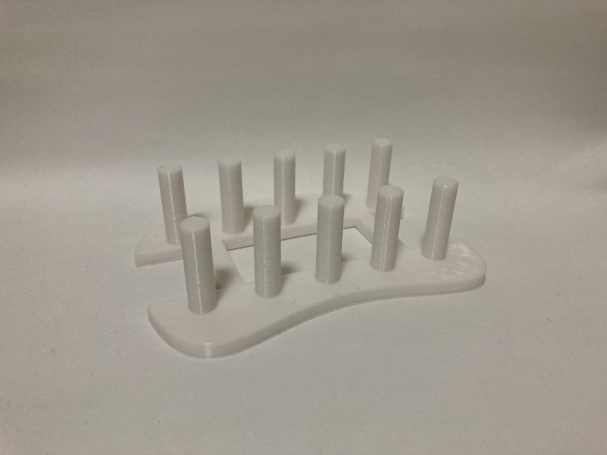

12月 1回目
これまでは「家庭向け」と言いながら少し気を衒うようなものが多かった。
ODPのページに乗る写真たちを見ると、もっとシンプルなものが欲しいと感じた。
＜１＞
意外になかったただの箱のようなもの。
持ち手の部分は３Dプリンターでもできる限りの丸みを。
そこには穴をたくさん開けたので、水場でも使えるだろう。
＜２＞
皿などを立てかけるものを想定して作った。
あるあるだが、印刷すると思ったより小さい。
 印刷の出来はとても綺麗である。
というのも、このように 下は広い平面 ＋ そこから伸びる真っ直ぐな柱 という形は３Dプリンタの得意な形であり、
基本的には失敗しないし、綺麗に印刷することができる。
皿置いたらこんな感じ↓
3Dプリンターが下手なもの
＜１＞の箱は横には楕円の穴が空いており、下にも穴が空いている。
しかし、下の穴は綺麗にできていたが、横の空洞部分は、
ほっそいフィラメントがたくさん糸を引いていたし、円の内側はざらざらであった。
↑「糸」いうのはこんな感じ。
取るのは簡単だが、非常に見栄えが悪い。
このような糸が出る原因としては、
3Dプリンターの製造方法は積層であり、モノをいくつもの層に分けて、下から印刷していくというものだ。
これは印刷の途中部分をプレビューしてみたものだ。↓
プレビューの層では、○の部分で一旦印刷を止めて、▲の部分から印刷を再開する。
その○から▲への移動の際に、固まりきらなかったノズルの先端にあるフィラメントが飴細工のほっそい部分のように
ビヨーンと伸びて固まってしまう。それが糸になる。
つまり注意することとしては、印刷するそうの中で、近い距離に印刷が止まる部分と始まる部分がない方がいいということだ。
＜２＞にはたくさんの棒があり、一層のうちに何度も印刷が止まったり始まったりする。
しかし、印刷の形は常に「円」であるため、柱ごとに印刷の始まりと終わりがある。
だから綺麗に印刷できた。
文字で説明する力が足りないことを悔しく思う。